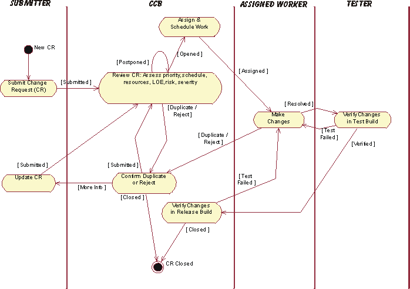
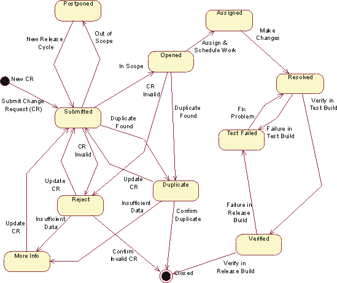
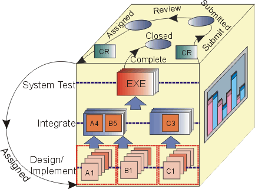

|
Change Request (CR) - A formally
submitted work product that is used to track all Stakeholder Requests including new features, enhancement requests,
defects, changed requirements, and related status information throughout the project lifecycle. All change history will
be maintained with the Change Request, including all state changes along with dates and reasons for the change. This
information will be available for any repeat reviews and for final closing.
Change (or Configuration) Control Board (CCB) - The board that oversees the change
process consisting of representatives from all interested parties, including customers, developers, and users. In a
small project, a single team member, such as the project manager or software architect, may play this role. In the
Rational Unified Process, this is shown by the Change
Control Manager role.
CCB Review Meeting - The function of this meeting is to
review Submitted Change Requests. An initial review of the contents of the Change Request is done in the meeting
to determine if it is a valid request. If so, then a determination is made if the change is in or out of scope for the
current release(s), based on priority, schedule, resources, level-of-effort, risk, severity and any other relevant
criteria as determined by the group. This meeting is typically held once per week. If the Change Request volume
increases substantially, or as the end of a release cycle approaches, the meeting may be held as frequently as daily.
Typical members of the CCB Review Meeting are the Test Manager, Development Manager and a member of the Marketing
Department. Additional attendees may be deemed necessary by the members on an "as needed" basis.
Change Request Submit Form - This form is displayed when a Change Request is being Submitted for the
first time. Only the fields necessary for the submitter to complete are displayed on the form.
Change Request Combined Form - This form is displayed when you are reviewing a Change Request that has already
been submitted. It contains all the fields necessary to describe the Change Request.
The following outline of the Change Request process describes the states and statuses of Change Requests through their
overall process, and who needs to be notified during the lifecycle of the Change Request. The general process
associated with Change Requests is described in  Task: Establish Change Control Process. Task: Establish Change Control Process.
The following example shows sample tasks that a project might adopt for managing a Change Request (CR) throughout its
lifecycle (click on items in the diagram to view descriptions):

Sample Change Request Management (CRM) Process Tasks Descriptions:
|
Task
|
Description
|
Responsibility
|
|
Submit CR
|
Any stakeholder on the project can submit a Change Request (CR). The Change Request is logged into the
Change Request Tracking System (e.g., Rational ClearQuest) and is placed into the CCB Review Queue, by
setting the Change Request State to Submitted.
|
Submitter
|
|
Review CR
|
The function of this task is to review Submitted Change Requests. An initial review of
the contents of the Change Request is done in the CCB Review meeting to determine if it is a valid
request. If so, then a determination is made if the change is in or out of scope for the current
release(s), based on priority, schedule, resources, level-of-effort, risk, severity and any other
relevant criteria as determined by the group.
|
CCB
|
|
Confirm Duplicate or
Reject
|
If a Change Request is suspected of being a Duplicate or Rejected as an
invalid request (e.g., operator error, not reproducible, the way it works, etc.), a delegate of the CCB
is assigned to confirm the duplicate or rejected Change Request and to gather more information from the
submitter, if necessary.
|
CCB Delegate
|
|
Update CR
|
If more information is needed (More Info) to evaluate a Change Request, or if a Change
Request is rejected at any point in the process (e.g., confirmed as a Duplicate,
Rejected, etc.), the submitter is notified and may update the Change Request with
new information. The updated Change Request is then re-submitted to the CCB Review Queue for
consideration of the new data.
|
Submitter
|
|
Assign & Schedule
Work
|
Once a Change Request is Opened, the Project Manager will then assign the work to the
appropriate team member - depending on the type of request (e.g., enhancement request, defect,
documentation change, test defect, etc.) - and make any needed updates to the project schedule.
|
Project Manager
|
|
Make Changes
|
The assigned team member performs the set of tasks defined within the appropriate section of the
process such as requirements, analysis & design, implementation, produce user-support materials,
and design test to make the changes requested. These tasks will include all normal review and unit test
tasks as described within the normal development process. The Change Request will then be marked as
Resolved.
|
Assigned Team Member
|
|
Verify Changes in Test
Build
|
After the changes are Resolved by the assigned team member (analyst, developer, tester,
tech writer, etc.), the changes are placed into a test queue to be assigned to a tester and
Verified in a test build of the product.
|
Tester
|
|
Verify Changes in
Release Build
|
Once the resolved changes have been Verified in a test build of the product, the Change
Request is placed into a release queue to be verified against a release build of the product, produce
release notes, etc. and Close the Change Request.
|
CCB Delegate (System Integrator)
|
The following example diagram shows sample states and who should be notified throughout the lifecycle of a Change
Request (CR) [Click on items in the diagram to view descriptions]:

Sample Change Request Management (CRM) State Descriptions:
|
State
|
Definition
|
Access Control
|
|
Submitted
|
This state occurs as the result of 1) a new Change Request submission, 2) update of an existing Change
Request or 3) consideration of a Postponed Change Request for a new release cycle. Change
Request is placed in the CCB Review queue. No owner assignment takes place as a result of this action.
|
All Users
|
|
Postponed
|
Change Request is determined to be valid, but "out of scope" for the current release(s). Change
Requests in the Postponed state will be held and reconsidered for future releases. A
target release may be assigned to indicate the timeframe in which the Change Request may be
Submitted to re-enter the CCB Review queue.
|
Admin
Project Manager
|
|
Duplicate
|
A Change Request in this state is believed to be a duplicate of another Change Request that has already
been submitted. Change Requests can be put into this state by the CCB Review Admin or by the team
member assigned to resolve it. When the Change Request is placed into the Duplicate
state, the Change Request number it duplicates will be recorded (on the Attachments tab in ClearQuest).
A submitter should initially query the Change Request database for duplicates of a Change Request
before it is submitted. This will prevent several steps of the review process and therefore save a lot
of time. Submitters of duplicate Change Requests should be added to the notification list of the
original Change Request for future notifications regarding resolution.
|
Admin
Project Manager
QE Manager
Development
|
|
Rejected
|
A Change Request in this state is determined by in the CCB Review Meeting or by the assigned team
member to be an invalid request or more information is needed from the submitter. If already assigned
(Open), the Change Request is removed from the resolution queue and will be reviewed
again. A designated authority of the CCB is assigned to confirm. No action is required from the
submitter unless deemed necessary, in which case the Change Request state will be changed to More
Info. The Change Request will be reviewed again in the CCB Review Meeting considering any new
information. If confirmed invalid, the Change Request will be Closed by the CCB and the
submitter notified.
|
Admin
Project Manager
Development Manager
Test Manager
|
|
More Info
|
Insufficient data exists to confirm the validity of a Reject or Duplicate
Change Request. The owner automatically gets changed to the submitter who is notified to provide more
data.
|
Admin
|
|
Opened
|
A Change Request in this state has been determined to be "in scope" for the current release and is
awaiting resolution. It has been slated for resolution before an upcoming target milestone. It is
defined as being in the "assignment queue". The meeting members are the sole authority for opening a
Change Request into the resolution queue. If a Change Request of priority two or higher is found, it
should be brought to the immediate attention of the QE or Development Manager. At that point they may
decide to convene an emergency CCB Review Meeting or simply open the Change Request into the resolution
queue instantly.
|
Admin
Project Manager
Development Manager
QE Department
|
|
Assigned
|
An Opened Change Request is then the responsibility of the Project Manager to Assign Work
based on the type of Change Request and update the schedule, if appropriate.
|
Project Manager
|
|
Resolved
|
Signifies that the resolution of this Change Request is complete and is now ready for verification. If
the submitter was a member of the QE Department, the owner automatically gets changed to the submitting
QE member; otherwise, it changes to the QE Manager for manual re-assignment.
|
Admin
Project Manager
Development Manager
QE Manager
Development Department
|
|
Test Failed
|
A Change Request that fails testing in either a test build or a release build will be placed in this
state. The owner automatically gets changed to the team member who resolved the Change Request.
|
Admin
QE Department
|
|
Verified
|
A Change Request in this state has been Verified in a test build and is ready to be
included in a release.
|
Admin
QE Department
|
|
Closed
|
Change Request no longer requires attention. This is the final state a Change Request can be assigned.
Only the CCB Review Admin has the authority to close a Change Request. When a Change Request is
Closed, the submitter will receive an email notification with the final disposition of
the Change Request. A Change Request may be Closed: 1) after its Verified
resolution is validated in a release build, 2) when its Reject state is confirmed, or 3) when it
is confirmed as a Duplicate of an existing Change Request. In the latter case, the submitter
will be informed of the duplicate Change Request and will be added to that Change Request for future
notifications (see the definitions of states "Reject" and "Duplicate" for
more details). If the submitter wishes to contest a closing, the Change Request must be updated and
re-Submitted for CCB review.
|
Admin
|
The state 'tags' provide the basis for reporting Change Request (aging, distribution or trend) statistics.

Change Request States in the context of the CM Cube.
|